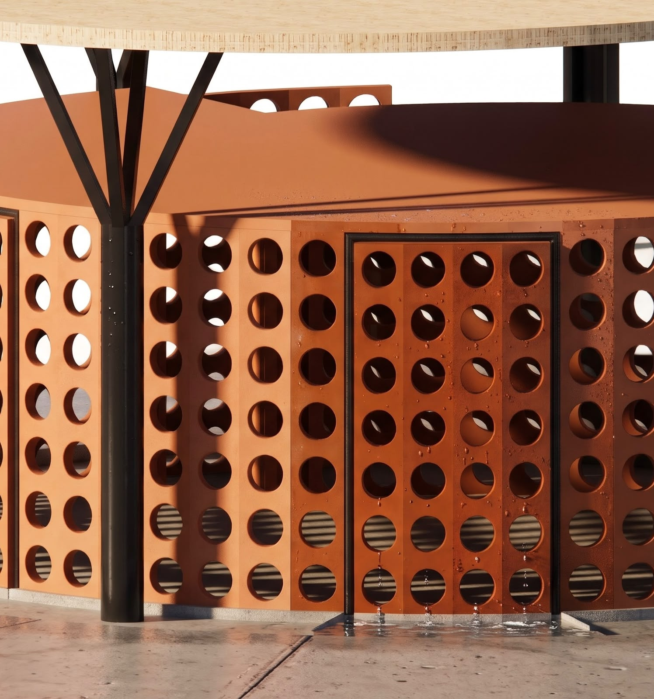
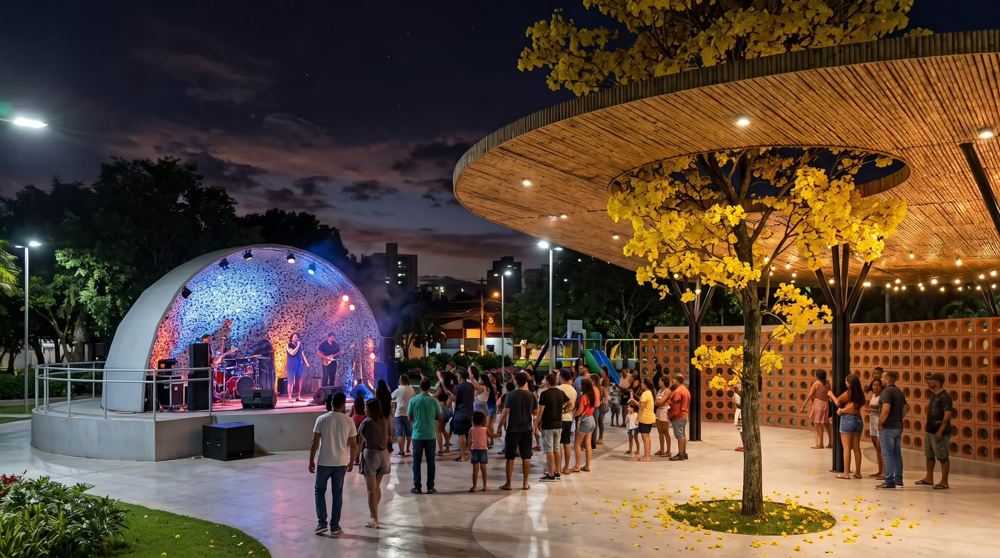
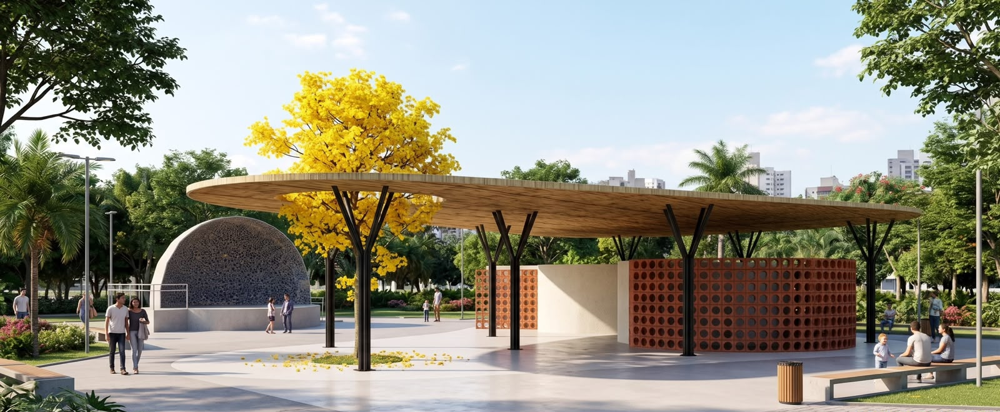

ELO ARQUITETURA E URBANISMO • PROJETO
Pavilhão Elo
Um abrigo que permanece.
Uma cultura que se renova.
Natureza, arquitetura e encontros em aproximadamente 350 m², na Praça Américo Ferreira de Abreu.

INSPIRAÇÃO NA NATUREZA
Um ninho para acolher a cultura
Com aproximadamente 350 m², o Pavilhão Elo tem como conceito o joão-de-barro, que constrói seu abrigo com barro, galhos e elementos da natureza, e cuja estrutura permanece mesmo depois que os filhotes crescem e deixam o ninho. Inspirado nessa relação entre permanência e efemeridade, o pavilhão se torna um abrigo duradouro para acolher eventos artísticos e culturais passageiros.
ARQUITETURA E CONFORTO NATURAL
Sala Ninho e as referências do Cerrado
A estrutura aberta conta com um teto de forma orgânica e um ipê integrado à construção, trazendo referências do Cerrado. A casa do joão-de-barro inspira a Sala Ninho, com planta em espiral e paredes de cobogós cerâmicos que permitem a entrada de luz e a conexão com o exterior.
O ambiente também conta com um sistema de resfriamento evaporativo inspirado no projeto Cool Ant, em que a água umedece os cobogós de terracota e, com a passagem do vento, promove o resfriamento natural do ar.


ARTE, ENCONTROS E IDENTIDADE LOCAL
Um pátio aberto a novas experiências
O pavilhão conta ainda com um pátio aberto, destinado à realização de eventos, exposições e outras atividades culturais. Esse espaço também se integra à concha acústica, permitindo que o público se reúna no pátio para assistir a apresentações e shows.
A concha recebe um mosaico em sua parede interna, valorizando a arte local e a identidade cultural de Uberlândia. A Sala Ninho, por sua vez, oferece um ambiente mais reservado, destinado a eventos com número reduzido de pessoas.

O PROJETO EM PERSPECTIVA
Permanência, natureza e convivência
